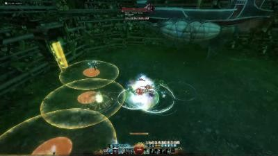
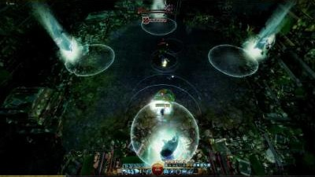
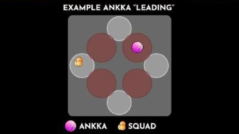
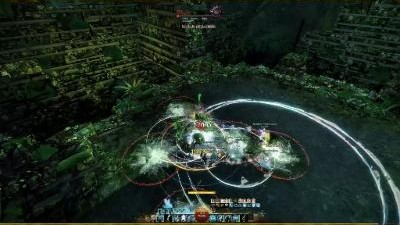
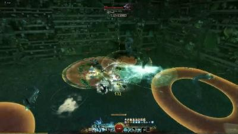
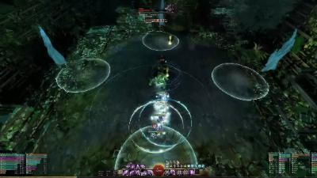

Jede nicht gebrochene Reanimated Spite gibt Ankka 1 Stack Power of the Void: je Stack +25 % Schaden und –25 % erlittener Schaden (multiplikativ). Bei 6 Stacks nimmt sie ~83 % weniger Schaden. Dazu –50 % Heilung auf euch (Barrier wirkt voll). Jeder bringt so viel CC wie möglich.
2
Quaggans: raus – sonst down
Viel größer als im NM. Nicht heil-, dodge- oder blockbar – nur Invuln/Distortion. Rauslaufen, ohne in Snakes oder Hands zu geraten.
3
Hands: mehr & tödlicher
Small Hands: im Nahkampf bleiben, sonst kommen Extra-AoEs. Timed Hands: größer, explodieren, nicht stapelbar → nahe der Gruppe an den Rand legen.
4
Snakeheads sofort töten
Mehr Köpfe, ihr Knockdown wirft dich in Todesfelder. Nahe Snakes mit Pierce/Epidemic wegräumen. Ecken meiden (Lich-Spawn).
5
P3: nur in Sanctuaries überleben
Devouring Void tickt immer stärker. Schutz nur in den 4 Sanctuaries (N/O/S/W). Krait spawnen im Norden → im S, W oder O stacken.
6
P3-Ritual: erst Spites, dann Antipathy
Die Antipathy spawnt am West-Sanctuary und frisst eins nach dem anderen im Uhrzeigersinn. Harte CC auf die Spites, langsame AoE-CC drauf, dann Antipathy töten. Ein verlorenes Sanctuary schadet weniger als Void-Stacks. Eng stacken: Ankka springt über Spieler (auch Pets/Mechs) – zu nah an der Wand teleportiert sie in die Mitte.
② Quaggan-Ringe: raus!

③ Timed Hands am Rand

⑤ P3: in die Sanctuaries

⑥ Ankka „leiten“
Details zum Nachschlagen
Angriffe – was sich ändert

Small Hands: nah an Ankka bleiben

Quaggans: nur Invuln/Distortion hilft
Fast alle Angriffe sind so verstärkt, dass sie one-shotten. Unverändert bleibt nur der Pull.
Small Hands: mehr AoEs; Spieler außerhalb der ersten drei bekommen Zusatz-AoEs.
Timed Hands: größer und explodieren voll aufgeladen – kein Stapeln mehr. In P3 passen 2 in eine Ecke.
Krait und Lich machen mehr Schaden; Größe, Tempo und Anzahl wie im NM.
Downs nehmen den Explosionsschaden nicht erneut → nach dem Angriff rezzen.
Vorsicht mit Down-Pulls: lieber warten, als einen Down in die nächste Explosion zu ziehen.
Ablauf der Angriffe pro Phase ist identisch zum NM.
Phase 1 & 2
Wie NM, aber Quaggans größer und mehr Flächen downen sofort – jeder Treffer belastet die Heiler.
Debilitating Void halbiert eingehende Heilung, nicht Barrier → Scourge und Mechanist sind starke Heiler.
Ab dem ersten Ritual spawnt Reanimated Hatred und fixiert Spieler mit wenig HP – AoEs draufwerfen.
Verpasste Spites in P1/P2 sind kein Drama: Stacks verfallen bei 75 % und 40 %. Klappt der CC aber gar nicht → /gg und mehr CC mitnehmen.
Phase 3 & Leiten
4 Sanctuaries in den Himmelsrichtungen

P3-Opener am West-Sanctuary
Sanctuary-Buff schützt kurz vor der Void – ähnlich Ley-Energy-Buildup, nur stärker.
Lich-Fixate: nicht sofort wegrennen, nahe der Gruppe kiten. Timed Hands in die Ecken (Lich-Spawn).
Große Spanne zwischen Ø und Top-DPS → als Support und als (Boon-)DPS gespielt.
Heal-Support
Troubadour, Luminary, Paragon, Druid
Ø-DPS unter 3,5k → in CM-Logs praktisch nur als Heiler/Support.
Komp-Tipp: Laut Wingman führt Mechanist (auch Hardstuck-Empfehlung als Heal-Alac – Barrier ignoriert die Heilungsreduktion), dazu Virtuoso, Harbinger und Scourge. Hardstuck rät zu Condi-Virtuoso/Scourge gegen die Snakeheads und zu Down-Pulls/Rezz-Skills.
Klassentipps – worauf du achten musst
Mechanik-Bezug aus dem Guide; die Klassenhinweise sind allgemeine Spieltipps. Für die neuesten Elite-Specs (z. B. Troubadour, Ritualist, Paragon, Luminary, Conduit, Evoker, Antiquary, Galeshot, Amalgam) gelten v. a. die Klassen-Grundregeln – prüfe die konkreten Skills im aktuellen Build.
Wächter
Firebrand · Luminary · Willbender · Dragonhunter
Firebrand: höchster Top-Wert in den Logs.
Purging Flames: halbpassiver Cleanse gegen Gift/Torment.